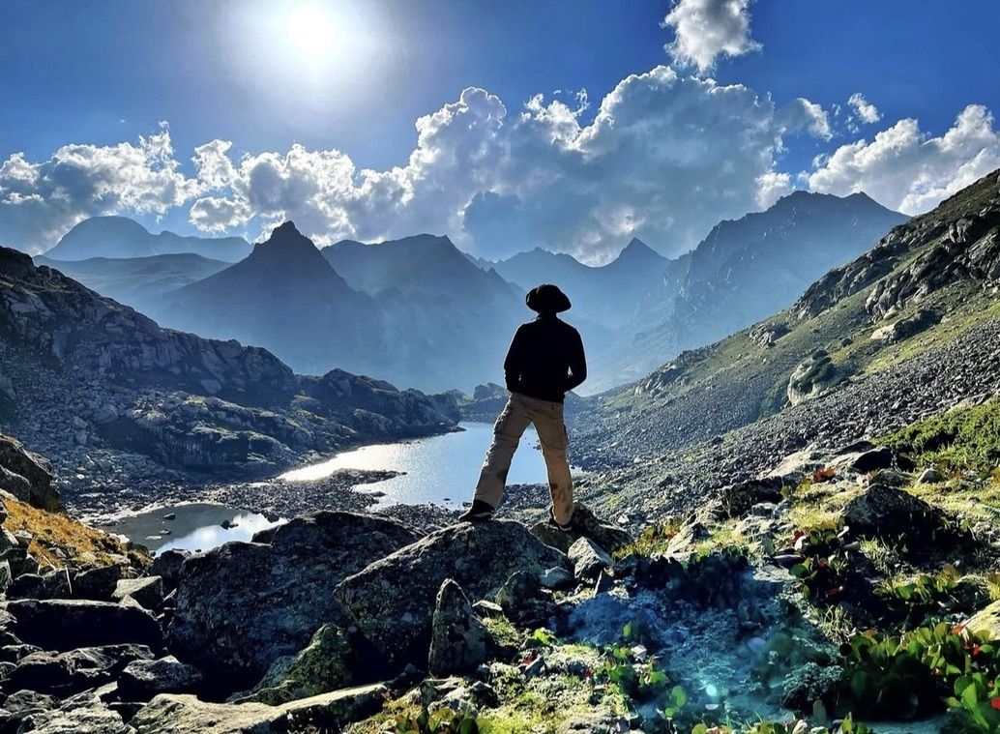
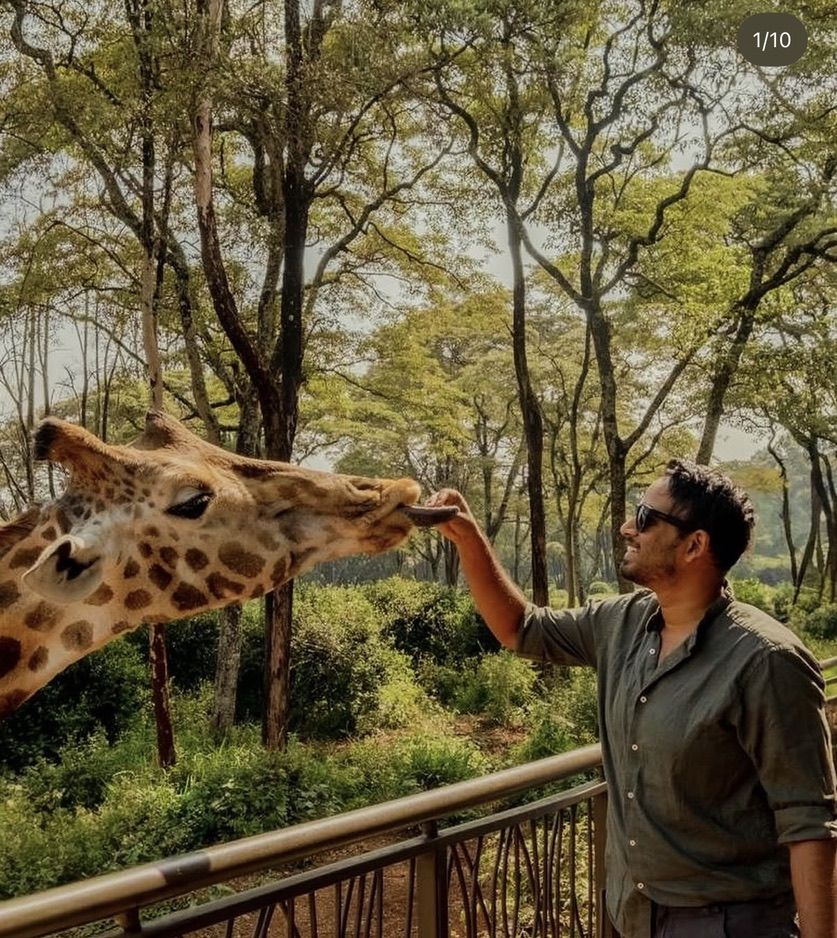

Off the clock
Long runs, big hills, good cookies
I've finished two ultramarathons, five marathons and an IRONMAN 70.3, and started two run clubs along the way. When I'm not running, I'm usually hiking somewhere high, traveling, or testing another batch of chocolate chip cookies.
2ultramarathons
5marathons, including Chicago
70.3miles, IRONMAN
2run clubs started
∞cookies tested



